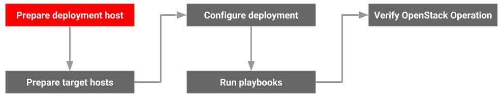

Prepare Deployment Host

In this section we are going to discuss how we are going to prepare OpenStack-Ansible host. This is the host that will hold the OpenStack-Ansible playbook Repository and deployment configurations.
Since this guide has been prepared using Ubuntu Linux 18.04 LTS operating systems you will not find the instructions on configuring other supported operating systems for OpenStack-Ansible. Please refer to the respective configurations manuals of those operating systems and adjust a particular configuration that suits your needs.
Note
When you install OpenStack in a production environment, we recommend using a separate deployment host that contains Ansible and orchestrates the OpenStack-Ansible (OSA) installation on the target hosts.
In a test environment, we recommend using one of the infrastructure target hosts as the deployment host.
To use a target host as a deployment host, follow the steps in Prepare the target hosts on the deployment host.
Configuring the Operating System¶
This section covers how to install and configure Ubuntu 18.04 LTS Serer in our OpenStack-Ansible host.
Install the Operating System¶
If your have downloaded your Ubuntu server image download the installation ISO from alternate download section.
Alternative Ubuntu Server installer¶
Since we require advanced networking and storage features such as; LVM, RAID, multipath, vlans, bonds, or re-using existing partitions, you will want to continue to use the alternate installer.
Download the alternate installer
Note
We do not cover on how to install the Ubuntu server here. We assume that you already know howto do it.
Configure The Network Interfaces.¶
We assume that your OpenStack Ansible host has two network interface cards. We are planning our network like below
1. Configure one network card for accessing the Internet
Network: 192.168.10.0/24
2. Configure the other network card for accessing our OpenStack deployment management network.
Network: 172.29.236.0/24
Changing netplan to ifupdown¶
The classic ifupdown network configuration used in Debian/Ubuntu has been replaced by netplan on Ubuntu 18.04 server system.
You can view the current netplan configuration using the command below. You may have a different name for your YML as per your installation environment.
cat /etc/netplan/01-netcfg.yaml
You will get an output like below.
# This file describes the network interfaces available on your system
# For more information, see netplan(5).
network:
version: 2
renderer: networkd
ethernets:
enp0s3:
dhcp4: yes
To re-enable ifupdown on this system, run:
sudo apt install ifupdown
Consistent Naming for Network Interfaces¶
New versions of Linux Kernel, including the one in our Ubuntu server name the network interfaces using a new convention based on the network interface type (PCI, PCIe, Onboard, Wireless, etc.,) and the relative position of the motherboard which we have slotted the specific card. For example, you may get interface names like enp0s3, eno1, p2p1 etc. While this is an advantageous in many cases as it provides consist ant name of each interface during our OpenStack-Ansible deployment we are going to rename them back to our traditional naming convention eth0, eth1, and so on.
To get back to ethX again will do the following configurations
sudo nano /etc/default/grub
Look for GRUB_CMDLINE_LINUX and add the following net.ifnames=0 biosdevname=0.
From:
GRUB_CMDLINE_LINUX=""
To:
GRUB_CMDLINE_LINUX="net.ifnames=0 biosdevname=0"
Generate a new grub file using the following command.
sudo grub-mkconfig -o /boot/grub/grub.cfg
Now reboot your systems
sudo systemctl reboot
Now check your interface name:
ip link show
You should get an output like below:
1: lo: <LOOPBACK,UP,LOWER_UP> mtu 65536 qdisc noqueue state UNKNOWN mode DEFAULT group default qlen 1000
link/loopback 00:00:00:00:00:00 brd 00:00:00:00:00:00
2: eth0: <BROADCAST,MULTICAST,UP,LOWER_UP> mtu 1500 qdisc fq_codel state UP mode DEFAULT group default qlen 1000
link/ether 08:00:27:cb:31:f1 brd ff:ff:ff:ff:ff:ff
3: eth1: <BROADCAST,MULTICAST,UP,LOWER_UP> mtu 1500 qdisc fq_codel state UP mode DEFAULT group default qlen 1000
link/ether 08:00:27:b4:05:38 brd ff:ff:ff:ff:ff:ff
Assigning IP Addresses¶
Use the following sample configuration your network.
sudo nano /etc/network/interfaces Add the following configurations